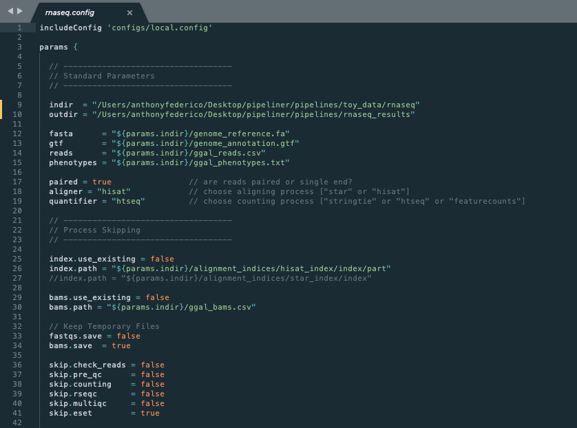
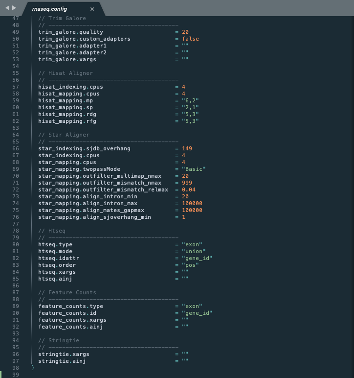
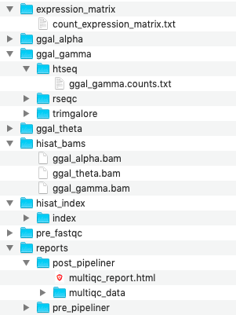

Basic Usage¶
Framework Stucture¶
Pipeline is a framework with various moving parts to support the development of multiple sequencing pipelines. The following is a simplified example of its directory structure:
/pipeliner
├── /docs
├── /envs
├── /scripts
├── /tests
└── /pipelines
├── /configs
├── /scripts
├── /templates
├── /toy_data
├── /rnaseq.nf
└── /rnaseq.config
- docs
- Markdown and Restructured Text documentaion files associated with Pipeliner and existing pipelines
- envs
- Yaml files and scripts required to reproduce Conda environments
- scripts
- Various helper scripts for framework setup and maintenance
- tests
- Python testing module for multi-pipeline automatic test execution and reporting
- pipelines/configs
- Base config files inherited by pipeline configurations
- pipelines/scripts
- Various helper scripts for pipeline processes
- pipelines/templates
- Template processes inherited by pipeline workflows
- pipelines/toy_data
- Small datasets for rapid development and testing of pipelines. These datasets are modifications from original RNA-seq and scRNA-seq datasets.
- pipelines/rnaseq.nf
- Nextflow script for the RNA-seq pipeline
- pipelines/rnaseq.config
- Configuration file for the RNA-seq pipeline
Pipeline Configuration¶
Note
These examples are applicable to all pipelines
In the previous section, we gave instructions for processing the RNA-seq toy dataset. In that example, the configuration options were all preset, however with real data, these settings must be reconfigured. Therefore the configuration file is typically the first thing a user will have to modify to suit their needs. The following is a screenshot of the first half of the RNA-seq configuration file.
{kind=link}
Config Inheritance¶
Line 1: Configuration files can inherit basic properties that are reused across many pipelines. We have defined several inheritable configuration files that are reused repeatedly. These include configs for running pipelines on local machines, Sun Grid Engine clusters, in Docker environments, and on AWS cloud computing.
Data Input and Output¶
Lines 9-15 All data paths are defined in the configuration file. This includes specifying where incoming data resides as well as defining where to output all data produced by the pipeline.
Basic Options¶
Lines 17-19 These are pipeline specific parameters that make large changes to how the data is processed.
Providing an Index¶
Lines 25-27 A useful feature of a pipeline is the ability to use an existing alignment index.
Starting from Bams¶
Lines 29-30 Another useful feature of a pipeline is the ability to skip pre-processing steps and start directly from the bam files. This allows users to start their pipeline from the counting step.
Temporary Files¶
Lines 33-34 By default, bam files are saved after alignment for future use. This can be useful, however these files are quite large and serve only as an intermediate step. Therefore, users can opt-out of storing them.
Skipping Steps¶
Lines 36-41 Users can skip entire pipeline steps and mix and match options that suit their need. Note that not all combination of steps are compatible.
Process Configuration¶
While the first half of the configuration is dedicated to controlling the pipeline, the second half is dedicated to modifying specific steps. We call these process-specific settings or parameters.
{kind=link}
Descriptive Arguments¶
Variables for common parameters used in each process are explicitly typed out. For example, trim_galore.quality refers to the quality threshold used by Trim Galore and feature_counts.id refers to the gene id that Feature Counts refers to in the gtf file header. These variable names match the same variable names given in the original documentation of each tool. Therefore, one can refer to their individual documentation for more information.
Xargs¶
Because some software tools have hundreds of arguments, they cannot all be listed in the configuration file. Therefore, another variable called xargs can be used to extend the flexibility of each tool. Users can add additional arguments as a string that will be injected into the shell command.
Ainj¶
Sometimes, users may want to add additional processing steps to a process without modifying the pipeline script or template directly. This can be done with the variable called ainj that injects a secondary shell command after the original template process.
Pipeline Execution¶
When the configuration file is set, run the pipeline with:
./nextflow rnaseq.nf -c rnaseq.config
If the pipeline encounters an error, start from where it left off with:
./nextflow rnaseq.nf -resume -c rnaseq.config
Warning
If running Pipeliner on a high performance cluster environment such as Sun Grid Engine, ensure that Nextflow is initially executed on a node that allows for long-running processes.
Output and Results¶
One the pipeline has finished, all results will be directed to a single output folder specified in the configuration file.
{kind=link}
Sample Folders¶
Each sample contains its own individual folder that holds temporary and processed data that was created by each process. In the screenshot, one can see the gene counts file specific to sample ggal_gamma that was generated by HTSeq.
Expression Matrix¶
The expression matrix folder contains the final count matrix as well as other normalized gene by sample matrices.
Bam Files¶
If the configuration file is set to store bam files, they will show up in the results directory.
Alignment Index¶
If an alignment index is built from scratch, it will be saved to the results directory so that it can be reused during future pipeline runs.
Reports¶
After a successful run, two reports are generated. A report conducted using the original data before any pre-processing steps as well as a final report run after the entire pipeline has finished. This allows one to see any potential issues that existed in the data before the pipeline as well as if those issues were resolved after the pipeline.